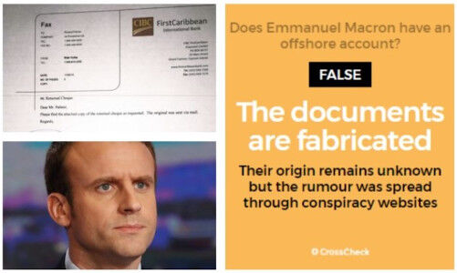
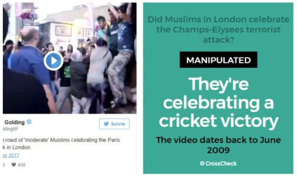
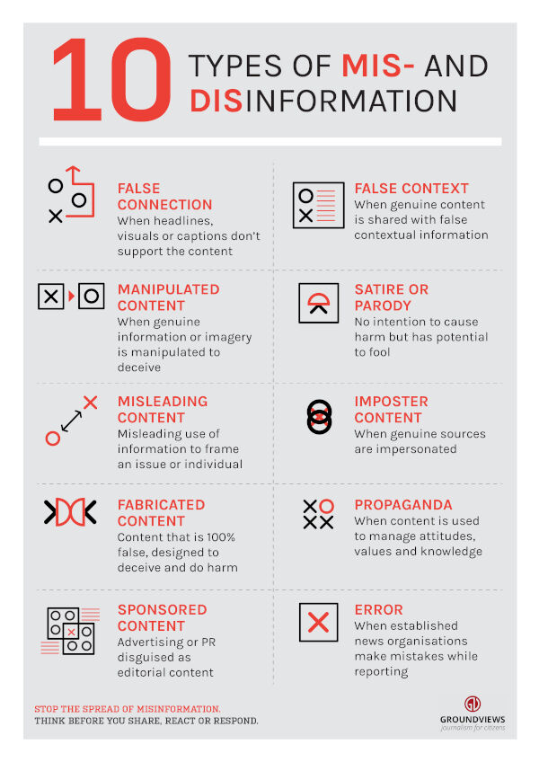
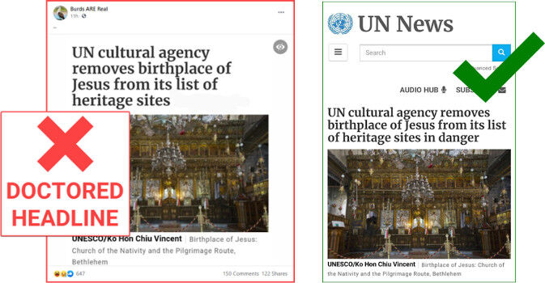

Trainees Edition
Trainers Edition
Trainees Edition
Trainers Edition
Module 2: Information Disorder
Module Description
The main purpose of this module is to introduce the conceptual framework of information disorder, in order to equip trainess with the ability to recognize and distinguish different categories and types of information disorder and approach analytically and critically when they encounter them.
The secondary aim is to guide trainers who want to use the content of this Module to train their trainess.
With these aims, definitions of the main categories and common types of information disorder along with guidelines about how to teach the subject are presented.
Trainess who successfully complete this module will be able to:
- recognize information disorder
- define, identify and distinguish main categories of information disorder (namely misinformation, disinformation and malinformation)
- define, identify and distinguish common types of information disorder (such as manipulated content, imposter content, fabricated content)
Additionally, trainers who successfully complete this module, will be able to demonstrate an understanding of how to teach information disorder.
Module Structure
This module consists of the following parts:
- Module Description (objectives, description of the content and learning outcomes)
- Module Structure
- Guidelines for Trainees
- Guidelines for Trainers (how to get prepared, methods to use and tips for trainers)
- Content (study materials and exercises)
- Quiz
- Resources (references and recommended resources and videos)
Main objectives of the module, description of the content and the learning outcomes are explained in the Module Description part. Content includes all study materials and the content related exercises. Quiz includes multiple choice questions for trainees to test their progress. Resources have two components: references and recommended resources for further reading and study. References is the list of sources cited in the content part. Recommended resources consist of a list of supplemental sources and videos which are highly recommended to read and watch for learning more on the topic. Guidelines for Trainees includes instructions and suggestions for trainess. Guidelines for Trainers leads trainers through different phases of the training and provides tips which could be useful while teaching the subject.
Guidelines for Trainees
Trainess are expected to read the text, closely study examples, watch recommended videos and do the exercises. They can consult suggested resources for further information. After completing the study of the content trainess are strongly suggested to take the quiz to evaluate their progress. They can revise the study material when and if needed.
Guidelines for Trainers
Guidelines for trainers includes suggestions and tips for trainers on how to use the content of this Module to train people on information disorder.
Getting Prepared
Preparing a presentation (PowerPoint/Prezi/Canva) which is enriched with visual materials (images and video clips) and clear solid examples is strongly suggested. It is also suggested to adapt the examples and exercises in this module to issues which are more familiar to the actual target group. Choosing local examples (country specific) regarding the current or well known issues help to illustrate a point more clearly. It also helps to draw the attention of trainess. The more familiar and popular the examples are, the better the message will be communicated. Local (national) fact-checking platforms could be a good source for a wide range of news/case studies which are already verified and labeled.
Getting Started
A short quiz (3 to 5 questions) in Kahoot or questions with Mentimeter can be used at the beginning for engaging participants in the topic. It can be used as a motivation tool as well as a tool to check trainees’ existing knowledge about the subject. Some examples for questions could be: What is disinformation? What is misinformation? What is imposter content?
Methods to Use
Various teaching methods can be used in combination during the training. Such as:
- Lecturing
- Discussion
- Group work
- Self reflection
Tips for Trainers
Warming-up
An effective way of involving participants and setting common expectations about what they will learn is to ask a few preliminary questions on the subject (information disorder) and categorise their responses. This can be done through group work by asking trainess to discuss and collect ideas, but also individually by asking each participant to write their ideas on sticky notes. The activity can be conducted as follows:
- Ask trainess to provide examples of information disorder
- Invite trainess to categorise the given examples and explain in what ways they differ
- Invite trainess to identify the topics of disinformation (such as politics, economy, health, technology, social benefits, entertainment and celebrities, etc.)
- Ask trainess where they encounter disinformation and in what form (videos, articles, posts, etc.).
- Ask trainess how they distinguish false information
- Ask trainess how often they think they come across disinformation.
After the discussions make sure that trainess are able to distinguish between intentional and unintentional spread of false information (distinction between disinformation and misinformation). Trainess should also understand that the level of their falseness in other words facticity (the degree to which false news relies on facts) might vary.
Presenting the Objective of the Lesson
The objective of the lesson should be made clear (which is to conceptualise disinformation as a phenomenon affecting our lives and decision-making and to reflect on its nature). Following the warming-up questions it will be easier to clarify the objectives.
Presenting the Lesson Content
While presenting the content make sure to interact with the trainess and encourage them for active participation.
- Before providing a definition of disinformation, ask participants to come up with their own.
- When introducing common types of information disorder, ask participants to give real life examples. Make comments on the examples whether or not they belong to the category you are talking about.
- When providing examples choose real world examples. And get as much background information as possible about that specific case you are presenting. So that if asked by trainess/participants you can provide more details.
- When you choose examples, make sure that they suit hundred percent well with the definition of the category you are addressing. Some examples could go into more than one category, which could be confusing for the beginners.
- When you choose examples from social media make sure to present the original post with likes and re-shares to be able to demonstrate the size of the effect.
- Provide some examples (if not real world examples they could be also some scenarios) with detailed information and ask participants to decide which kind of information disorder it is.
- After introducing all different types of information disorder, ask participants to categorise all these different types under the three main categories (misinformation, disinformation, malinformation). Like in the following example.

Source: Humprecht, Esserl & Van Aelst, 2020, p. 495
Concluding
Make a short summary of the lesson and ask a couple of questions which help underlying the most important messages you would like to give. Following questions can help.
- Ask trainess to describe a piece of information they have encountered online that at first appeared to be true, but later turned out to be false.
- Ask trainess whether they have ever shared false information and realised it afterwards
- Ask trainess how much do they think they are affected by the spread of misinformation
- Ask trainess if someone unknowingly spreads false information, does that person have the same responsibility for the consequences as someone who intentionally spreads disinformation
Content: Information Disorder
Introduction
Since the term “fake news” does not cover all of the misleading content (some of them are not even fake), a new concept which is called “information disorder” was introduced. Information disorder is a highly complex phenomenon. Some types of which are less harmful and could be described as low-level information pollution while others are more sophisticated and profoundly deceptive (Wardle & Derakhshan, 2017, p. 20; Wardle, 2019, p. 57; Wardle, 2020).
Categorising “information disorder” helps a better understanding of today’s information landscape. In this module, main categories and different types of information disorder are introduced.
Main Categories of Information Disorder
There are three main categories of information disorder, namely mis-information, dis-information and mal-information. The differences between these three categories are described by the extent of harm and falseness (Wardle & Derakhshan, 2017, p. 20; Wardle, 2020). It is important to distinguish news that is true from those that are false, and news that is created, produced and/or distributed with ill-intent from those that are not (Wardle & Derakhshan, 2017, p. 20).

Source: Wardle, 2019, p. 9 p. 495
Disinformation
Disinformation is content that is intentionally false and shared to cause harm (Wardle, 2019, p. 8; Wardle & Derakhshan, 2017, p. 20). Fabricated or deliberately manipulated/doctored audio-visual content, intentionally created conspiracy theories or rumors are some examples for this category (Staats, 2021).
Example: Did Emmanuel Macron Open an Offshore Account?
Just before the 2017 French Presidential election a rumour spread on social media that Emmanuel Macron (then-candidate) had a secret offshore account in the Bahamas. Documents circulated online such as the contract with the bank (including Macron’s signature and the contact information of the bank) were all proved to be fabricated. The aim of this debunked news was discouraging French voters from voting Macron (CrossCheck, May 5, 2017; Wardle & Derakhshan, 2017, p. 21).

Source: CrossCheck, May 5, 2017
Misinformation
Misinformation is when false information is shared, but no harm is intended. When disinformation is shared by a person who doesn’t realise that it is false or misleading, it turns into misinformation (Wardle & Derakhshan, 2017, p. 20; Wardle, 2019, p. 8). Unintentional errors such as inaccurate photo captions, dates, statistics, translations are also considered in this category. When taken seriously, even satire becomes misinformation (Staats, 2021).
Example: Did London Muslims “Celebrate” a Terrorist Attack in Paris?
Just before the country's 2017 presidential election, three French Police officers and a tourist were shot by an ISIS fighter on the Champs Elysees. One officer was killed and the others were seriously wounded. This attack in Paris inspired a great deal of misinformation as is the case in almost all breaking news situations (CrossCheck, April 22, 2017; Wardle & Derakhshan, 2017, p. 21).
The day after the misfortunate event, a video posted on Twitter by Paul Golding, the leader of a far-right British political organisation, claimed that London Muslims were celebrating the terrorist attack. In fact, the video was posted on YouTube in 2009 showed a group of Pakistanis celebrating Pakistan's victory in a cricket match in London. The claim was false (it was a disinformation) and deleted afterwards. However, it was retweeted 753 times before it was deleted and turned into misinformation (CrossCheck, April 22, 2017).
The people sharing this type of content rarely do so to cause harm. Rather, they either try to be helpful or act with emotions such as anger or fear, and fail to verify and critically evaluate the information they are sharing (Wardle & Derakhshan, 2017, p. 21).

Source: CrossCheck, April 22, 2017
Malinformation
Malinformation is sharing genuine information to cause harm often by moving information that should remain private to the public sphere (Wardle & Derakhshan, 2017, p. 20). In other words, it is deliberate publication of private information for personal or corporate interest (Staats, 2021). This term also defines the malicious distortion of genuine information (such as context, date or time) before being shared (Wardle, 2019, p.8).
Example: Email Leak Designed to Damage Hillary Clinton’s Presidential Campaign
In 2016, the email account of John Podesta, chair of Hillary Clinton's presidential campaign, was hacked and his emails were released by Wikileaks. Podesta has refused to confirm or deny the emails' authenticity, suggesting some could have been doctored, without pinpointing any of the correspondence as fake. The subsequent investigation by U.S. intelligence agencies reported no "evident forgery". Most of the emails reflected ordinary campaign communications and did not reveal wrongdoing, however the leak shed light on the inner workings of the presidential campaign (Podesta emails, 2021; Wardle, 2019, p. 8).

Source: CNN: Tapper, October 18, 2016
Common Types of Information Disorder
Within the three overarching categories mentioned above, there are various types of information disorder that help understanding the complexity of this ecosystem (Wardle, 2019, p. 12; Groundview, 2018; Turcilo & Obrenovic, 2020; Tandoc, Lim & Ling, 2018).

Source: Groundview, 2018
Manipulated Content
This is when genuine content is tampered with or doctored in some way. It describes alteration of an aspect of genuine content, often photos or videos, to deceive (Wardle, 2019, p. 46; Wardle, 2020).
Manipulation of images has become a common practice with the advancement of digital technologies, and powerful image manipulation software. Effects may range from simple to complex. Simple adjustments can include increasing colour saturation and removing minor elements. More-invasive changes can include removing or inserting elements into an image (Tandoc, Lim & Ling, 2018, p. 144). This is a powerful tactic, because it’s based on genuine content (Wardle, 2019, p. 46; Wardle, 2020).
Example: Did Emma Gonzales Rip the US Constitution in Half?
A high-profile piece of manipulated content targeted high school student Emma Gonzalez and three of her peers who survived the school shooting in Florida. They were photographed to appear on the front cover of Teen Vogue and the magazine created a video, pushed out on Twitter, of Gonzalez ripping a gun target in half. This video was altered so it appeared Gonzalez was ripping the US Constitution in half and reached thousands of people (Wardle, 2019, p. 47).

Source: Ansari, March 25, 2018
Fabricated Content
This category describes content which has no factual basis and is 100% fabricated (Wardle, 2019, p. 52; Wardle, 2020; Tandoc, Lim & Ling, 2018, p. 143).
Example: Did an Eagle Try to Snatch a Baby in a Park in Canada?
In 2012 a video posted on YouTube by MrNuclearCat, shows an eagle swooping down, snagging a baby off the ground, then dropping him a few seconds later. It has received over 2.7 million views in two days and received over 45 million views before it emerged that the video was created by three students of a Montreal design college as part of a class assignment to create content that might successfully hoax viewers (Wardle, 2019, p. 53). Both the eagle and the baby were created in 3D animation and integrated into the film afterwards (Stanglin, December, 19, 2012).

Source: Stanglin, December, 19, 2012
Deepfakes
Deepfakes is another example of fabricated content. It is used to manufacture a video in which the face and voice of a person is digitally altered so that he/she appears to be someone else and say or do things that person never did (Wardle, 2019, p. 52; Wardle, 2020). Deepfakes use powerful techniques such as machine learning and artificial intelligence to manipulate or generate visual and audio content with a high potential to deceive (Deepfake, 2021).

Source: Deepfake, 2021
Example: Vladimir Putin’s Deepfake
Russian president Vladimir Putin’s deepfake has been created by a nonpartisan advocacy group to show how fragile democracy is (Deepfake, 2021). This video included an ending comment detailing that the footage was not real, however it might certainly not be the case for all deepfakes.
Misleading Content
Misleading use of information is not new and has always been a problem both in journalism and politics. It can come in many forms such as the selection of a partial segment from a quote to support a point, creating statistics that support a particular claim, deciding not to cover something because it undermines an argument or cropping a photo to frame an event in a particular way (Wardle, 2019, p. 24; Wardle, 2020).
Example: Did UNESCO Remove the Birthplace of Jesus from Its List of Heritage Sites?
In a Facebook post it is claimed that UNESCO has removed the Church of the Nativity, officially recognized as the birthplace of Jesus, from its World Heritage List. UNESCO in 2012 added the site to its List of World Heritage in Danger because it had been damaged by water leaks. The church was removed from the “in danger” list crediting extensive restorative work in 2019. The screenshot in this Facebook post has been doctored to conceal the last two words in the actual headline: “in danger.” The misleading doctored version that went viral obscured these two words generated outrage (Get Smart About News, May 4, 2021).

False Context
This category is used to describe content that is genuine but has been reframed and shared with false contextual information. It often happens during a breaking news event when old imagery is re-shared, but it also happens when old news articles are re-shared as new, when the headline still potentially fits with current events (Wardle, 2019, p. 28; Wardle, 2020).
Example: Were Piles of Rubbish Left in Hyde Park by Global-warming Protesters?
In April 2019, social media users started sharing images that supposedly showed piles of rubbish in London’s Hyde Park. Many of these posts claimed that the refuse had been left behind after a global-warming-protest event held by the group “Extinction Rebellion”. In fact, neither of these photographs show the aftermath of the global-warming protest. The image on the right comes from Mumbai, India. The image on the left truly shows rubbish in Hyde Park. However, the image was taken in the aftermath of another event, not the global-warming protest (Evon, April 23, 2019).

Source: Evon, April 23, 2019
False Connection
It is a technique called clickbait, that is used for attracting attention and driving clicks through rather misleading and sensational headlines, visuals, or captions (Wardle, 2019, p. 20; Wardle, 2020). Online news is today often driven by the quest for page views and as a result, there is a proliferation of clickbait headlines (Chen, Conroy & Rubin 2015). Although the harm is minimal it has a negative impact on people’s trust and relationship with news and therefore considered as a form of information disorder (Wardle, 2019, p. 20; Wardle, 2020).
Example: Do You Want to Buy a House for £1 in an Italian Town Which is Covid-free?
Who wouldn’t like to buy a house in Italy for just £1? Many people can click on this link for the sake of curiosity. When they click they find out that along with the £1, there are thousands of pounds to pay for the renovation (obligatory) of these abandoned houses, annual insurance fee as well as a fine if the buyer fails to renovate the house within the given deadline (The Sun: McGuire, June 11, 2020; Saavedra, 2020).

Imposter Content
This category describes impersonation of genuine sources. For instance, the logo of a well-known brand or name is used alongside false content. One of the most powerful ways people judge content is if it has been created by an organisation or person that they already know and trust. Adding the logo of a trusted news organisation or the name of an established figure or journalist to a news story (text, photo or a video) increases the chance that people will trust the content without checking (Wardle, 2019, p. 34; Wardle, 2020).
Example: Was Macron’s campaign for the French Presidency Financed by Saudi Arabia?
In 2017, an imposter version of the Belgian newspaper Le Soir emerged claiming that Macron was being funded by Saudi Arabia. The clone site (which has been taken down later on) was particularly sophisticated because it not only used exactly the same font, design, and page layout as the newspaper’s site, but also all of its links directed users to the real Le Soir site. The official website of Le Soir quickly denied that the story had come from its newsroom (CrossCheck, March 2, 2017).
This news from the imposter site was shared on Twitter by Marion Maréchal-Le Pen, a French parliamentarian and niece of far-right presidential candidate Marine Le Pen (Macron’s rival). Marion Maréchal-Le Pen deleted her tweet half an hour after it was published (CrossCheck, March 2, 2017).

Source: CrossCheck, March 2, 2017
Conspiracy Theories
Conspiracy theory can also be added to the list of information disorder. Conspiracy theories attempt to explain significant events and circumstances as the malicious acts of secret and powerful people and groups (Douglas, 2021, p. 270). They are not supported by evidence that withstands scrutiny but this doesn’t stop people believing these theories (Lewandowsky & Cook, 2020, p. 3). For instance, over a third of Americans believe that global warming is a hoax, and over half believe that Lee Harvey Oswald did not act alone in the assassination of John F. Kennedy (Douglas, Sutton & Cichocka, 2017, p. 538).
With the outbreak of a global pandemic, a number of baseless and unfounded conspiracies and unproven claims of alternative COVID-19 treatments lacking any medical evidence have spread rapidly through social media (Canales, 2020).
Example: Have Coronavirus Originated in a Lab Linked to China’s Biowarfare Program?
A news article published in the Washington Times on 26th January 2020 claiming Coronavirus may have originated in a lab in China. After the claim was disproved by scientists, on 25th March 2020, the editor of the Washington Times published a note explaining that scientists outside of China have had a chance to study the SARS-CoV-2 virus and concluded that it does not show signs of having been manufactured or purposefully manipulated in a lab, though the exact origin remains murky and experts debate whether it may have leaked from a Chinese lab that was studying it (Gertz, January 26, 2020). While disproving the original conspiracy theory, the explanation note leaves the discussion open to other conspiracy theories.

Source: Gertz, January 26, 2020
News Satire and News Parody
Generally news satire and news parody are not included within the information disorder typology. Because they have no intention to mislead or cause harm. However they have the potential to fool people. When it is shared and re-shared, the original context of the content and cues get lost. Frequently over time, people do not realise the content is satire or parody and more likely believe that it is true. Sometimes the agents of disinformation deliberately label content as satire to ensure that it will not be “fact-checked,” and as a way of excusing any harm that comes from that content (Wardle, 2019, p. 14; Wardle, 2020).
Although parody and satire share many characteristics such as both relying on humour as a means of drawing an audience, there are some differences between the two. Satire is referring to mock news programs, which typically use humour or exaggeration to present audiences with news updates. Parody mimics mainstream news media and their presentation format, however uses non-factual (fictitious) information to inject humour (Tandoc, Lim & Ling, 2018, p. 141-142).
Example: Was Kim Jong-Un, North Korean Leader, Selected as the Sexiest Man Alive for 2012?
The American parody website the Onion published a news article in 2012 claiming Kim Jong-Un Onion’s sexiest man alive for 2012. As on occasion the Onion has been mistaken for an actual news website, this news item picked up and received coverage in mainline news in China (BBC, November 28, 2012).

The Onion, Nov. 11, 2012 < Source > The Guardian, Nov., 27, 2012
In cases such as this, and in cases where parody items appear widely such as on April Fools’ Day, people can be taken in by the ruse.
Example: Did People Believe the April Fools’ Prank About the “Mummified Fairy”?
In 2007, a man in the United Kingdom posted a photograph on his website of a “mummified fairy” which he created as an April Fools’ prank. After receiving 20,000 visitors to the site in one day, he explicitly revealed that he had fabricated the scenario, yet many accused him of covering up the truth and insisted that the fairy was real (BBC, April 1, 2007). This event proves that regardless of how ridiculous information seems, once it is in the public sphere, it can be taken seriously (Swire-Thompson & Ecker, 2018).

Source: BBC, April 1, 2007
Sponsored Content
Advertising materials in the guise of genuine news reports and press releases published as news are also sometimes described as a form of information disorder. This is when public relations practitioners adopt the practises and/or appearance of journalists in order to insert marketing or other persuasive messages into news media. Sometimes video news releases (which are described as pre-packaged video segments produced by public relations firms aimed at selling or promoting a product, a company, or an idea) are provided to television news outlets for possible incorporation into an actual news report. Although the content’s usage is determined by news agencies, the obscuration of its origins may mislead audiences into believing that the news produced is entirely free of bias (Tandoc, Lim & Ling, 2018, p. 145-146).
Propaganda
This is when content is used to manage attitudes, values and knowledge (Groundview, 2018). Propaganda refers to news stories which are created often by a political entity to influence public perceptions. The overt purpose is to benefit a public figure, organisation or government. Similar to advertising, propaganda is often based on facts, but includes bias that promotes a particular side or perspective. Such blending of news and commentary hides behind the appropriation of being an objective piece of news; however, the goal is often to persuade rather than to inform (Tandoc, Lim & Ling, 2018, p. 146-147).
Example: Did Ukraine Shoot the Malaysian Boeing MH17?
On 14 November 2014, Channel One, (Perviy kanal), an official Russian news channel, presented an aerial photo claiming to show an Ukranian jet fighter firing a missile at MH17. This photo was supposed to refute the widely held view in the West that MH17 had been shot down by a BUK missile fired by Russian-backed separatists in eastern Ukraine. The report openly shifted the blame to Ukraine (Khaldarova & Pantti, 2016, p. 891-892). Investigations later on revealed that Russia fired the missile that brought the plane (Malaysia Airlines Flight MH17) down, killing all 298 people on board (BBC: Ivshina, October 16, 2015).
While it is a type of legacy news agency, there are studies which reveal that Channel One is used as a tool for propaganda by the Russian government (Khaldarova & Pantti, 2016, p. 893).

Source: BBC: Ivshina, October 16, 2015
Exercises
Quiz
References
Ansari, T. ( March 25, 2018). People are sharing a fake picture of a Parkland survivor tearing up the constitution. BuzzFeed.
BBC. (April 1, 2007). Fairy fool sparks huge response.
BBC. (November 28, 2012). China paper carries Onion Kim Jong-un ‘heart-throb’ spoof.
Canales, S. B. (2020). The Australian Libraries and Information Association and National Archives band together against disinformation. The Canberra Times.
Chen, Y., Conroy, N.J. & Rubin, V.L. (2015). Misleading online content: Recognizing clickbait as ‘false news’. In Proceedings of the 2015 ACM on Workshop on Multimodal Deception Detection, Seattle, Washington, USA: ACM.
CrossCheck. (March 2, 2017). Was Macron’s campaign for the French presidency financed by Saudi Arabia? No.
CrossCheck. (May 5, 2017). Did Emmanuel Macron open an offshore account?
CrossCheck. (April 22, 2017). Did London Muslims “celebrate” a terrorist attack on the Champs-Elysees?
Deepfake. (2021). Wikipedia.
Douglas, K.M., Sutton, R.M. & Cichocka, A. (2017).The Psychology of conspiracy theories. Current Directions in Psychological Science, 26(6), 538-542. doi:10.1177/0963721417718261
Douglas, K.M. (2021). COVID-19 conspiracy theories. Group Processes & Intergroup Relations, 24(2), 270-275. doi:10.1177/1368430220982068
Elassar, A. (March 17, 2020). One dangerous coronavirus 'self-check test' is circulating on social media. Here's why you should avoid it. CNN.
EUvsDisinfo (September 7, 2019). Disinfo: A British spy admits to killing Princess Diana on the instructions of Prince Philip.
Evon, D. (April 23, 2019). Were piles of rubbish left in Hyde Park by global-warming protesters? Snopes.
Firstdraft (2020). Too much information: a public guide to navigating the infodemic.
Gertz, B. (January 26, 2020). Coronavirus may have originated in lab linked to China’s biowarfare program. The Washington Times.
Get Smart About News (May 4, 2021).
Groundview. (2018). INFOGRAPHIC: 10 types of mis and disinformation.
The Guardian (November, 27, 2012). China's People's Daily falls for Kim Jong-un 'sexiest man alive' spoof.
Humprecht, E. , Esserl, F. & Van Aelst, P. (2020). Resilience to online disinformation: A framework for cross-national comparative research. The International Journal of Press/Politics, 25(3), 493–516.
Ivshina, O. (October 16, 2015). Flight MH17: Russia and its changing story. BBC.
Khaldarova, I. & Pantti, M. (2016). Fake news: The narrative battle over the Ukrainian conflict. Journalism Practice, 10 (7), 891–901.
Lewandowsky, S., & Cook, J. (2020). The Conspiracy Theory Handbook.
LaCapria, K. (June 20, 2017). Did a Retired MI5 Agent Confess to Killing Princess Diana? Even real deathbed confessions are questionable enough. Snopes.
McGuire, C. (June 11, 2020). You can buy a house for £1 in this Italian town – where they’ve had no cases of coronavirus. The Sun.
The Onion (November 11, 2012). Kim Jong-Un Named The Onion's Sexiest Man Alive For 2012 [UPDATE].
Podesta emails. (2021). Wikipedia.
Reuters (June 17, 2020). Fact check: Old fabricated Obama “Kenyan birth certificate” resurfaces.
Saavedra, A.V. (2020). I'm not one of those victims of clickbait, am I? Coco Solution.
Schiffer, Z. (March 12, 2020). A viral list of dubious coronavirus tips claims to be from Stanford — it isn’t. The Verge.
Staats, B. (2021). Misinformation, disinformation, malinformation: What's the difference? Minitex.
Stanglin, D. (December, 19, 2012). Design college says eagle-snatching-kid video a hoax. USA Today.
Swire-Thompson, B. & Ecker, U. (2018). Misinformation and its correction: Cognitive mechanisms and recommendations for mass communication. In B. G. Southwell, E. A. Thorson & L. Sheble (Eds.) Misinformation and Mass Audiences. University of Texas Press.
Tandoc, E.C., Lim, Z. W. & Ling, R. (2018). Defining “fake news”. Digital Journalism, 6(2), 137-153. DOI: 10.1080/21670811.2017.1360143.
Tapper, J. (October 18, 2016). Wikileaks seems to reveal top Clinton advisers' frustration with the Clintons over political attacks. CNN.
Turcilo, L. & Obrenovic, M. (2020). Misinformation, disinformation, malinformation: Causes, trends and their influence on democracy. A Publication of Heinrich Boll Foundation.
Wardle, C. (2019). First Draft’s essential guide to understanding information disorder. First Draft.
Wardle, C. (2020). The Age of information disorder. In C. Silverman (Ed.). Verification Handbook for Disinformation and Media Manipulation, 3rd Ed. European Journalism Centre.
Wardle, C. & Derakhshan, H. (2017). Information disorder: Toward an interdisciplinary framework for research and policymaking. The Council of Europe.
Recommended Sources
Lewandowsky, S., & Cook, J. (2020). The Conspiracy Theory Handbook.
Silverman, C. (2016). Here are 50 of the Biggest Fake News Hits on Facebook from 2016. BuzzFeed.
Tandoc, E.C., Lim, Z. W. & Ling, R. (2018). Defining “fake news”. Digital Journalism, 6(2), 137-153. DOI: 10.1080/21670811.2017.1360143.
Turcilo, L. & Obrenovic, M. (2020). Misinformation, disinformation, malinformation: Causes, trends and their influence on democracy. A Publication of Heinrich Boll Foundation.
Wardle, C. (2018). Information disorder: The essential glossary.
Wardle, C. (2019). First Draft’s essential guide to understanding information disorder. First Draft.
Wardle, C. (2020). The Age of information disorder. In C. Silverman (Ed.). Verification Handbook for Disinformation and Media Manipulation, 3rd Ed. European Journalism Centre.
Wardle, C. & Derakhshan, H. (2017). Information disorder: Toward an interdisciplinary framework for research and policymaking. The Council of Europe.
Recommended Videos
DiResta, R. (2020). Conspiratinol thinking. Checkology.
Wardle, C. (2019). Deepfakes: Is this video even real? NYT (NewYork Times) Opinion.
Wardle, C. (2020). Misinformation. Checkology.
Wardle, C. (2020). Why we don’t say fake news. FirstDraft.